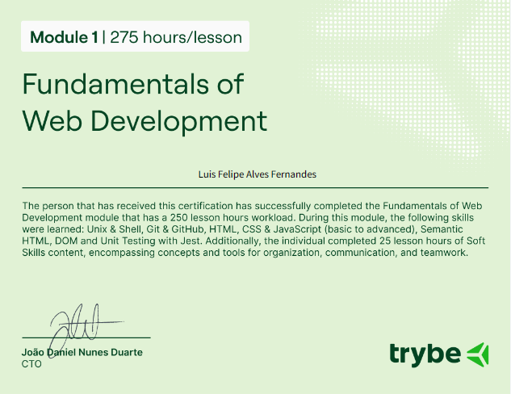
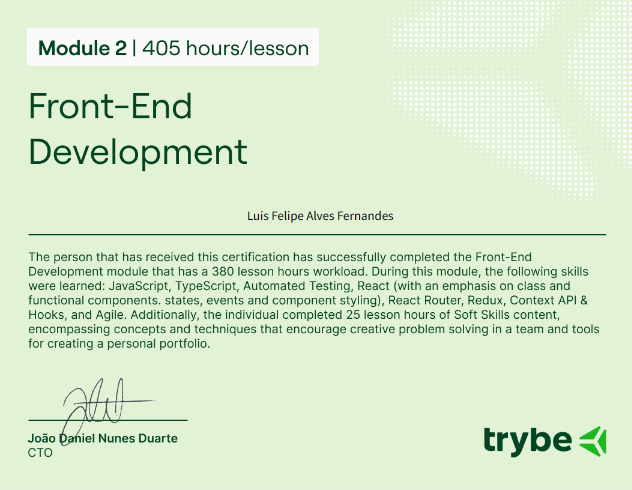
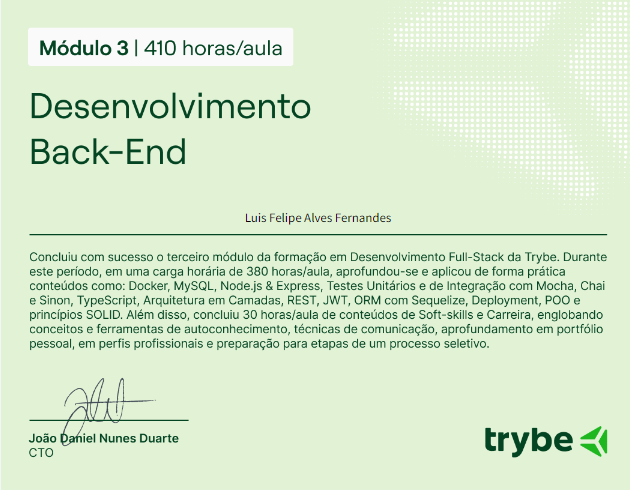
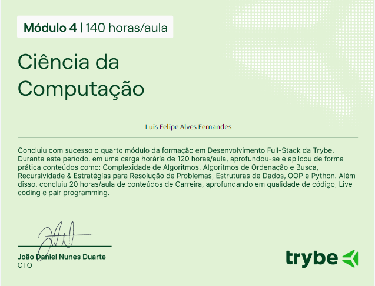
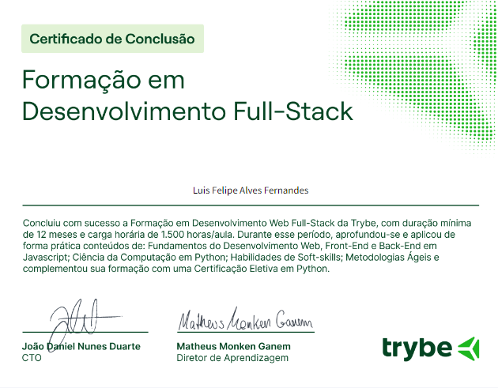

Curso de Programação na 
Durante meu percurso na Trybe, participei de um programa de formação intensivo em programação, com duração de 1 ano, de maio de 2023 a maio de 2024. O curso, com um total de 1.500 horas de aula, ofereceu uma formação abrangente e prática em diversas áreas essenciais do desenvolvimento de software.
O que é a Trybe ?
Principais Áreas de Foco:
- Introdução ao Desenvolvimento de Software: Base sólida nos princípios e práticas fundamentais.
- Front-End: Desenvolvimento de interfaces de usuário com HTML, CSS e JavaScript.
- Back-End: Criação de servidores, APIs e gerenciamento de banco de dados com Node.js, Express e outras tecnologias.
- Ciência da Computação: Fundamentos teóricos e algoritmos para o desenvolvimento de software.
- Engenharia de Software: Técnicas de design e arquitetura para soluções robustas e escaláveis.
- Metodologias Ágeis: Aplicação de Scrum e Kanban para gerenciamento de projetos.
- Habilidades Comportamentais: Desenvolvimento de soft skills como comunicação e trabalho em equipe.
Certificações da trybe:
    Faculdade em Análise e Desenvolvimento de Sistemas
Atualmente, estou cursando Análise e Desenvolvimento de Sistemas na instituição SENAC, no modelo de Ensino a Distância (EAD). Iniciado em abril de 2024 e com previsão de conclusão em abril de 2026, o curso oferece uma formação abrangente e flexível, permitindo o equilíbrio entre estudos e experiência prática.
Aspectos Relevantes do Curso:
Análise e Desenvolvimento de Sistemas: Metodologias modernas e práticas de desenvolvimento e análise. Ensino a Distância: Flexibilidade para integrar teoria com experiência prática. Currículo Abrangente: Disciplinas em programação, banco de dados, engenharia de software e mais.
Este curso complementa e expande meu conhecimento técnico, preparando-me para enfrentar desafios complexos no campo da tecnologia.
Programa de Capacitação na
Participei de um programa de capacitação na Alpar, de março de 2024 a agosto de 2024, projetado para expandir minhas habilidades técnicas e práticas.
Principais Componentes do Programa:
Aulas com Especialistas em ServiceNow: Aprofundamento nas habilidades técnicas em ServiceNow. Melhores Práticas em JavaScript e AngularJS: Aprimoramento de conhecimentos e práticas essenciais. Módulos do ServiceNow: Exploração de diversos módulos para otimização de processos. Consultoria e Estudos de Caso: Projetos simulando situações reais de clientes.
O que é ServiceNow ?
Esse programa foi fundamental para aprimorar minhas habilidades técnicas e práticas, preparando-me para enfrentar desafios reais e oferecer soluções eficazes.
Certificações: